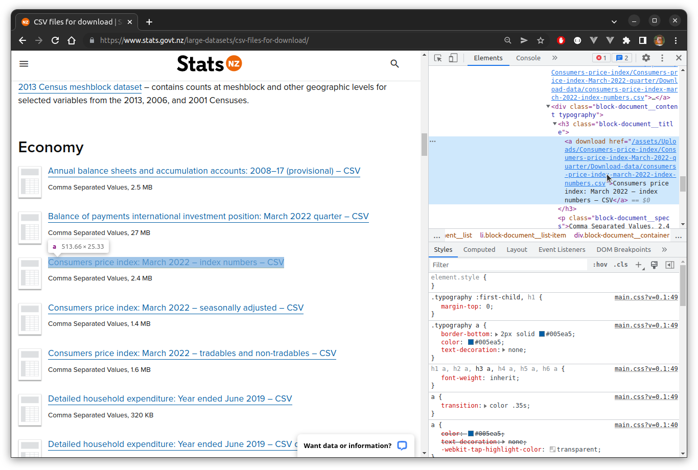
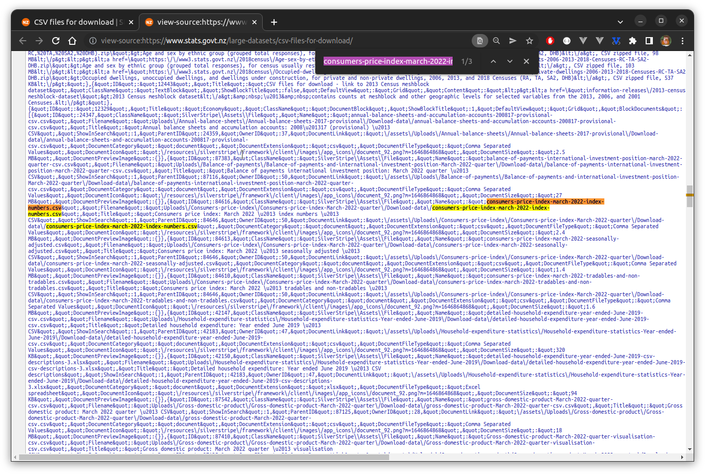
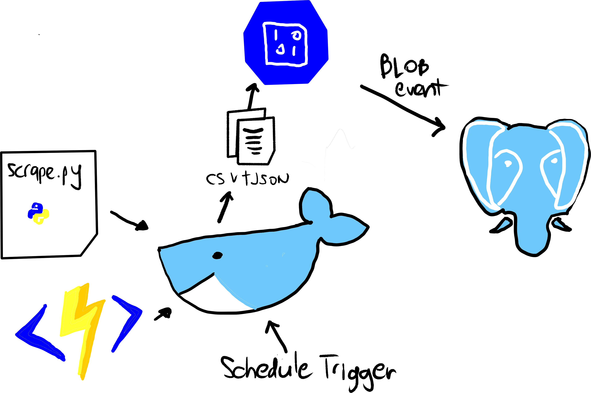

Overview
Let’s say you have a need to fetch data from a range of online sources. You want to be able to fetch data on-demand, or according to some fixed schedule; and you want to be able to add new sources easily. Further assume that you want to use the public cloud to implement things for the most part, and that you have selected Microsoft Azure.
There are a number of ways we could do this, but here we settle on a method using Azure Functions. No matter the specific use case, our general process will be the same. We create an Azure Function that is responsible for fetching the data we need, and then for saving the extracted information to BLOB storage. And we have an additional function which runs whenever new files appear in BLOB storage, and then copies that data to a database. This last step might be better implemented in other ways, for example via a Logic Application or Azure Data Factory pipeline in response to a BLOB trigger, but that’s personal preference to some extent.
Note it’s likely others will be using some variation of the code underpinning this post, and Python is the language they’re most likely to know and be comfortable with. So, for practical reasons, all the code in this post will be Python. I don’t particularly like Python, which means I’m also not particularly good at it! So, you know, keep that in mind when reading any code listings 😀.
Working With Remote Content in Practice
Sometimes, scraping content from a website is easy. Using a language like Python, it is easy to use a module such as beautiful soup to find data within a web page or series of web pages. But things aren’t always so easy. Let’s look at a couple of examples. First:
Stats NZ, CSV files for download
This page contains a number of CSV files, mostly containing time series data. Let’s say we want to extract the unadjusted Consumers Price Index (CPI) data, which looks to be in the file:
Consumers price index: March 2022 – index numbers – CSV
This isn’t a stable URL since it will clearly change when the June 2022 figures become available. That’s pretty unforgivable, but we could still work with that by searching for a link tag with an href attribute matching a regular expression like ^.*(/consumers-price-index){1}.*(.csv){1}$. If we open this in a browser and inspect the link we’re interested in, we see:

So, targeting something like a[download] looks a reasonable option for getting all files, after which we can filter. So, you would expect the following to do the job:
from bs4 import BeautifulSoup
import requests, re
soup = BeautifulSoup(
requests.get('https://www.stats.govt.nz/large-datasets/csv-files-for-download/').text,
'html.parser'
)
def get_cpi_links(x):
links = x.select("h3.block-document__title > a[download]")
hrefs = list(map(lambda x: x['href'], links))
r = re.compile("^.*(/consumers-price-index){1}.*(index-numbers.csv){1}$")
return list(filter(lambda x: bool(r.match(x)), hrefs))
cpi = get_cpi_links(soup)But if you run this, you will find that cpi is an empty list. WTF?

This site weirdly ships most of the elements which will eventually be loaded to the DOM as an escaped string containing about 150000 characters:
<div id="pageViewData" data-value="here!"></div>The string turned into valid HTML and injected into the DOM after page load by a JavaScript call-back. This is dumb, but it also means that the page can’t be scraped naively. Instead, users would have to parse this string themselves, or use a JavaScript-capable browser via Selenium or puppeteer.
A Simple Template
A stated goal was to be able to easily deploy a new function for any additional online source we want to fetch. So, we build a basic template which can be used as a starting point for any new function. Users copy the template, and then just modify two files:
scrape.pymetadata.json
scrape.py should contain a single function called scrape which returns a list of pandas DataFrames, and metadata.json should contain a list of objects describing the expected DataFrames. each of which we ultimately want to copy to a
replace the content of just two filesWe At a high level:

A Bit More Detail…
, including:
- information found in web pages, such as numbers in a table
- information found in downloadable files, such as CSV files, Excel spreadsheets or PDF files
- information pubished via data services
range of disparate data sourcesand store it all in some central database.
For various reasons I recently found myself wanting to fetch data from a range of online sources, and then put all of that data together in a database. Moreover, I wanted this to be automated as much as possible, with data being fetched according to some pre-defined schedule in most cases. I put together a local solution using Selenium WebDriver to control a headless Chrome session, and I just used cron for the scheduling. This worked well enough, but it’s hardly an enterprise solution.
The only cloud-based option available to me where I work is Microsoft Azure. And while there are a few different options that would likely work well, Azure Functions seems a good fit. So, in this post we will run through a simple example to illustrate the process. We’ll work entirely locally, so no Azure account required, using Azure Function Core Tools and a few other related tools.
Note that the reason we use Selenium WebDriver is because often the data we want can only be fetched using a JavaScript-capable web browser. And this means that whatever code we deploy, it must have access to a web browser it can control. Containerisation is an obvious solution here, and so build a Docker image to run our function. While this is a reasonably narrow use case, one can nevertheless imagine other scenarios where we wish to deploy code that has a non-trivial set of dependencies which might be most easily satisfied using containers.